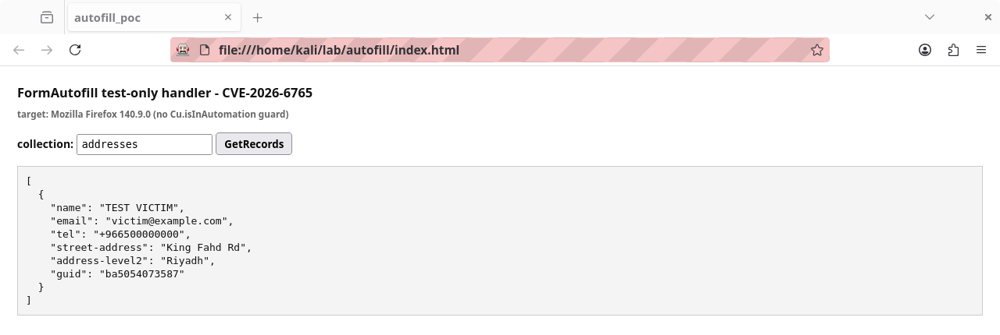
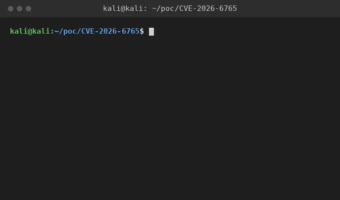

Test-only FormAutofill handlers exposed in production
Firefox isolates web content in sandboxed child processes while sensitive data such as saved addresses and credit cards lives in the trusted parent process.
Abdulaziz Alasaiqah
CVE-2026-6765 · VERIFIED FIXED
Vendor
Mozilla Firefox
Component
Toolkit / Form Autofill
Class
Information Disclosure, Improper Access Control
CWE
359, 284, 862, 749
CVSS
5.3 Medium (NVD)
Fixed in
Firefox 150, ESR 140.10; Thunderbird 150, 140.10
Bounty
1000 USD
Reporter
Abdulaziz Alasaiqah, MFSA 2026-30
Summary
Firefox isolates web content in sandboxed child processes while sensitive data such as saved addresses and credit cards lives in the trusted parent process. The two sides communicate through message actors and the parent must never trust a message from content without a check.
Four FormAutofill message handlers meant only for automated testing shipped in production without a guard. The actor was registered with allFrames and no origin restriction, so any compromised content process could call them to read, inject, or delete stored autofill records with no authorization.
Root cause
The four test-only handlers, FormAutofill:GetRecords, FormAutofill:SaveAddress, FormAutofill:SaveCreditCard, and FormAutofill:RemoveCreditCards, carried a comment marking them for automation but the Cu.isInAutomation guard that should gate them was missing. The parent actor answered those messages from any content process reaching it through the actor boundary. Mozilla's official rating covers the disclosure of stored autofill data; the same missing guard also let a compromised content process inject or delete records through the same unguarded path. Tracked in Bugzilla 2022419.
Proof of concept
- From a content context on a vulnerable build reach the FormAutofill actor for the current window.
- Invoke a handler that the fixed build gates behind the Cu.isInAutomation automation check.
- The affected build answers the message and exposes the saved Form Autofill data. A fixed build returns nothing outside automation.


Tools
- The Marionette client (marionette-driver) to drive Firefox and send the FormAutofill actor message from chrome-privileged context, standing in for the compromised-content-process threat model since windowGlobalChild.getActor is not exposed to ordinary content script.
- A throwaway Firefox profile seeded with synthetic autofill data only, never real personal or payment data.
- A vulnerable build (Firefox 140.9.0esr) to show the disclosure, and a patched build to confirm the fix.
Impact
A compromised content process can read the saved addresses and credit cards held in the trusted parent process. Mozilla scored the issue as confidentiality impact only and rated it moderate. The same unguarded actor also exposed test handlers for saving and removing records. The official rating covers the disclosure of stored autofill data.
Fix
// gate every test-only handler behind the automation check
if (!Cu.isInAutomation) {
throw new Error("Test-only message received outside automation");
}